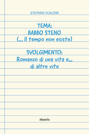

Un viaggio di 430 pagine attraverso una vita vera — dolori, gioie, amicizie e un amore che sfida ogni confine temporale. Una storia che ti farà riscoprire ciò che conta davvero.
👉 Acquista ora il tuo esemplareDisponibile da €9,49 (eBook) · €19,50 (Cartaceo)

La vita corre e le persone che ami sembrano allontanarsi sempre di più
I ricordi più preziosi sbiadiscono, e con essi una parte di te
Cerchi storie vere, autentiche — non romanzi costruiti a tavolino — che ti tocchino davvero l'anima
"Se hai mai desiderato fermare il tempo per rivivere un momento con chi ami… questo libro è stato scritto per te."
Nel 2023, Stefano Scaloni — avvocato, padre, uomo della provincia marchigiana — decide di raccontarsi. Non per vanità. Ma come dono ai suoi figli e agli amici più cari, per i suoi settant'anni.
Il risultato è un libro che non si legge: si vive.
Con una sincerità a volte spietata, Stefano apre le porte della sua esistenza: i dolori profondi, la perdita della moglie amata Giovanna, gli aneddoti comici, i personaggi indimenticabili di una provincia italiana autentica.
"Il tuo stile è scorrevole e diretto, capace di coinvolgere senza risultare mai pesante." — Stefano Michelangeli
Si legge d'un fiato. Si capisce la profondità, l'Amore senza se e senza ma per i suoi cari.
Un atto d'Amore… sull'Amore che vince su tutto, anche sul tempo.
Più che leggere un libro è stato come fare un viaggio lungo 430 pagine con Te, Stefano, tutta la tua famiglia e tutti i nostri Amici.
Un romanzo coinvolgente, scritto con il cuore che emoziona e a tratti commuove. Non è solo una storia personale ma un viaggio introspettivo.
Opera prima frizzante e non eccessivamente autoreferenziale. La sua prosa è precisa e puntuale.
Man mano che leggevo il libro, rivivevo mentalmente gli stessi anni della mia vita. Una serie infinita di flashback.
Il tempo passa. I momenti belli finiscono. Ma le storie vere restano per sempre.
Scegli la tua piattaforma preferita:
"Il tempo non esiste quando l'amore è più forte di tutto." — Babbo Steno